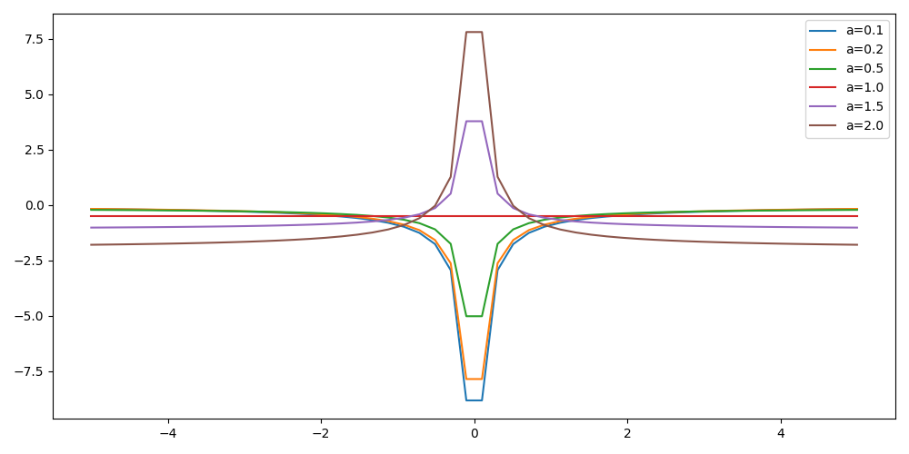

Quantum Monte Carlo
Table of Contents
- 1. Introduction
- 2. Numerical evaluation of the energy of the hydrogen atom
- 3. Variational Monte Carlo
- 4. Diffusion Monte Carlo
- 5. Project
- 6. Schedule
1 Introduction
This website contains the QMC tutorial of the 2021 LTTC winter school Tutorials in Theoretical Chemistry.
We propose different exercises to understand quantum Monte Carlo (QMC) methods. In the first section, we start with the computation of the energy of a hydrogen atom using numerical integration. The goal of this section is to familarize yourself with the concept of local energy. Then, we introduce the variational Monte Carlo (VMC) method which computes a statistical estimate of the expectation value of the energy associated with a given wave function, and apply this approach to the hydrogen atom. Finally, we present the diffusion Monte Carlo (DMC) method which we use here to estimate the exact energy of the hydrogen atom and of the H2 molecule, starting from an approximate wave function.
Code examples will be given in Python3 and Fortran. You can use whatever language you prefer to write the programs.
We consider the stationary solution of the Schrödinger equation, so the wave functions considered here are real: for an \(N\) electron system where the electrons move in the 3-dimensional space, \(\Psi : \mathbb{R}^{3N} \rightarrow \mathbb{R}\). In addition, \(\Psi\) is defined everywhere, continuous, and infinitely differentiable.
All the quantities are expressed in atomic units (energies, coordinates, etc).
1.1 Energy and local energy
For a given system with Hamiltonian \(\hat{H}\) and wave function \(\Psi\), we define the local energy as
\[ E_L(\mathbf{r}) = \frac{\hat{H} \Psi(\mathbf{r})}{\Psi(\mathbf{r})}, \]
where \(\mathbf{r}\) denotes the 3N-dimensional electronic coordinates.
The electronic energy of a system, \(E\), can be rewritten in terms of the local energy \(E_L(\mathbf{r})\) as
\begin{eqnarray*} E & = & \frac{\langle \Psi| \hat{H} | \Psi\rangle}{\langle \Psi |\Psi \rangle} = \frac{\int \Psi(\mathbf{r})\, \hat{H} \Psi(\mathbf{r})\, d\mathbf{r}}{\int |\Psi(\mathbf{r}) |^2 d\mathbf{r}} \\ & = & \frac{\int |\Psi(\mathbf{r})|^2\, \frac{\hat{H} \Psi(\mathbf{r})}{\Psi(\mathbf{r})}\,d\mathbf{r}}{\int |\Psi(\mathbf{r}) |^2 d\mathbf{r}} = \frac{\int |\Psi(\mathbf{r})|^2\, E_L(\mathbf{r})\,d\mathbf{r}}{\int |\Psi(\mathbf{r}) |^2 d\mathbf{r}} \end{eqnarray*}For few dimensions, one can easily compute \(E\) by evaluating the integrals on a grid but, for a high number of dimensions, one can resort to Monte Carlo techniques to compute \(E\).
To this aim, recall that the probabilistic expected value of an arbitrary function \(f(x)\) with respect to a probability density function \(P(x)\) is given by
\[ \langle f \rangle_P = \int_{-\infty}^\infty P(x)\, f(x)\,dx, \]
where a probability density function \(P(x)\) is non-negative and integrates to one:
\[ \int_{-\infty}^\infty P(x)\,dx = 1. \]
Similarly, we can view the the energy of a system, \(E\), as the expected value of the local energy with respect to a probability density \(P(\mathbf{r})\) defined in 3\(N\) dimensions:
\[ E = \int E_L(\mathbf{r}) P(\mathbf{r})\,d\mathbf{r} \equiv \langle E_L \rangle_{P}\,, \]
where the probability density is given by the square of the wave function:
\[ P(\mathbf{r}) = \frac{|\Psi(\mathbf{r})|^2}{\int |\Psi(\mathbf{r})|^2 d\mathbf{r}}\,. \]
If we can sample \(N_{\rm MC}\) configurations \(\{\mathbf{r}\}\) distributed as \(P\), we can estimate \(E\) as the average of the local energy computed over these configurations:
\[ E \approx \frac{1}{N_{\rm MC}} \sum_{i=1}^{N_{\rm MC}} E_L(\mathbf{r}_i) \,. \]
2 Numerical evaluation of the energy of the hydrogen atom
In this section, we consider the hydrogen atom with the following wave function:
\[ \Psi(\mathbf{r}) = \exp(-a |\mathbf{r}|) \]
We will first verify that, for a particular value of \(a\), \(\Psi\) is an eigenfunction of the Hamiltonian
\[ \hat{H} = \hat{T} + \hat{V} = - \frac{1}{2} \Delta - \frac{1}{|\mathbf{r}|} \]
To do that, we will compute the local energy and check whether it is constant.
2.1 Local energy
You will now program all quantities needed to compute the local energy of the H atom for the given wave function.
Write all the functions of this section in a single file :
hydrogen.py if you use Python, or hydrogen.f90 is you use
Fortran.
- When computing a square root in \(\mathbb{R}\), always make sure that the argument of the square root is non-negative.
- When you divide, always make sure that you will not divide by zero
If a floating-point exception can occur, you should make a test to catch the error.
2.1.1 Exercise 1
Write a function which computes the potential at \(\mathbf{r}\).
The function accepts a 3-dimensional vector r as input argument
and returns the potential.
\(\mathbf{r}=\left( \begin{array}{c} x \\ y\\ z\end{array} \right)\), so \[ V(\mathbf{r}) = -\frac{1}{\sqrt{x^2 + y^2 + z^2}} \]
Python
#!/usr/bin/env python3 import numpy as np def potential(r): # TODO
Fortran
double precision function potential(r) implicit none double precision, intent(in) :: r(3) ! TODO end function potential
2.1.1.1 Solution solution
Python
#!/usr/bin/env python3 import numpy as np def potential(r): distance = np.sqrt(np.dot(r,r)) assert (distance > 0) return -1. / distance
Fortran
double precision function potential(r) implicit none double precision, intent(in) :: r(3) double precision :: distance distance = dsqrt( r(1)*r(1) + r(2)*r(2) + r(3)*r(3) ) if (distance > 0.d0) then potential = -1.d0 / distance else stop 'potential at r=0.d0 diverges' end if end function potential
2.1.2 Exercise 2
Write a function which computes the wave function at \(\mathbf{r}\).
The function accepts a scalar a and a 3-dimensional vector r as
input arguments, and returns a scalar.
Python
def psi(a, r): # TODO
Fortran
double precision function psi(a, r) implicit none double precision, intent(in) :: a, r(3) ! TODO end function psi
2.1.2.1 Solution solution
Python
def psi(a, r): return np.exp(-a*np.sqrt(np.dot(r,r)))
Fortran
double precision function psi(a, r) implicit none double precision, intent(in) :: a, r(3) psi = dexp(-a * dsqrt( r(1)*r(1) + r(2)*r(2) + r(3)*r(3) )) end function psi
2.1.3 Exercise 3
Write a function which computes the local kinetic energy at \(\mathbf{r}\).
The function accepts a and r as input arguments and returns the
local kinetic energy.
The local kinetic energy is defined as \[T_L(\mathbf{r}) = -\frac{1}{2}\frac{\Delta \Psi(\mathbf{r})}{\Psi(\mathbf{r})}.\]
We differentiate \(\Psi\) with respect to \(x\):
\[ \Psi(\mathbf{r}) = \exp(-a\,|\mathbf{r}|) \] \[\frac{\partial \Psi}{\partial x} = \frac{\partial \Psi}{\partial |\mathbf{r}|} \frac{\partial |\mathbf{r}|}{\partial x} = - \frac{a\,x}{|\mathbf{r}|} \Psi(\mathbf{r}) \]
and we differentiate a second time:
\[ \frac{\partial^2 \Psi}{\partial x^2} = \left( \frac{a^2\,x^2}{|\mathbf{r}|^2} - \frac{a(y^2+z^2)}{|\mathbf{r}|^{3}} \right) \Psi(\mathbf{r}). \]
The Laplacian operator \(\Delta = \frac{\partial^2}{\partial x^2} + \frac{\partial^2}{\partial y^2} + \frac{\partial^2}{\partial z^2}\) applied to the wave function gives:
\[ \Delta \Psi (\mathbf{r}) = \left(a^2 - \frac{2a}{\mathbf{|r|}} \right) \Psi(\mathbf{r})\,. \]
Therefore, the local kinetic energy is \[ T_L (\mathbf{r}) = -\frac{1}{2}\left(a^2 - \frac{2a}{\mathbf{|r|}} \right) \]
Python
def kinetic(a,r): # TODO
Fortran
double precision function kinetic(a,r) implicit none double precision, intent(in) :: a, r(3) ! TODO end function kinetic
2.1.3.1 Solution solution
Python
def kinetic(a,r): distance = np.sqrt(np.dot(r,r)) assert (distance > 0.) return a * (1./distance - 0.5 * a)
Fortran
double precision function kinetic(a,r) implicit none double precision, intent(in) :: a, r(3) double precision :: distance distance = dsqrt( r(1)*r(1) + r(2)*r(2) + r(3)*r(3) ) if (distance > 0.d0) then kinetic = a * (1.d0 / distance - 0.5d0 * a) else stop 'kinetic energy diverges at r=0' end if end function kinetic
2.1.4 Exercise 4
Write a function which computes the local energy at \(\mathbf{r}\),
using the previously defined functions.
The function accepts a and r as input arguments and returns the
local kinetic energy.
\[ E_L(\mathbf{r}) = -\frac{1}{2} \frac{\Delta \Psi}{\Psi} (\mathbf{r}) + V(\mathbf{r}) \]
Python
def e_loc(a,r): #TODO
Fortran
When you call a function in Fortran, you need to declare its
return type.
You might by accident choose a function name which is the
same as an internal function of Fortran. So it is recommended to
always use the keyword external to make sure the function you
are calling is yours.
double precision function e_loc(a,r) implicit none double precision, intent(in) :: a, r(3) double precision, external :: kinetic double precision, external :: potential ! TODO end function e_loc
2.1.4.1 Solution solution
Python
def e_loc(a,r): return kinetic(a,r) + potential(r)
Fortran
double precision function e_loc(a,r) implicit none double precision, intent(in) :: a, r(3) double precision, external :: kinetic double precision, external :: potential e_loc = kinetic(a,r) + potential(r) end function e_loc
2.1.5 Exercise 5
Find the theoretical value of \(a\) for which \(\Psi\) is an eigenfunction of \(\hat{H}\).
2.1.5.1 Solution solution
\(a=1\) cancels the \(1/|r|\) term, and makes the energy constant and equal to -0.5 atomic units.
2.2 Plot of the local energy along the \(x\) axis
The program you will write in this section will be written in
another file (plot_hydrogen.py or plot_hydrogen.f90 for
example).
It will use the functions previously defined.
In Python, you should put at the beginning of the file
#!/usr/bin/env python3 from hydrogen import e_loc
to be able to use the e_loc function of the hydrogen.py file.
In Fortran, you will need to compile all the source files together:
gfortran hydrogen.f90 plot_hydrogen.f90 -o plot_hydrogen
2.2.1 Exercise
For multiple values of \(a\) (0.1, 0.2, 0.5, 1., 1.5, 2.), plot the local energy along the \(x\) axis. In Python, you can use matplotlib for example. In Fortran, it is convenient to write in a text file the values of \(x\) and \(E_L(\mathbf{r})\) for each point, and use Gnuplot to plot the files. With Gnuplot, you will need 2 blank lines to separate the data corresponding to different values of \(a\).
The potential and the kinetic energy both diverge at \(r=0\), so we choose a grid which does not contain the origin to avoid numerical issues.
Python
#!/usr/bin/env python3 import numpy as np import matplotlib.pyplot as plt from hydrogen import e_loc x=np.linspace(-5,5) plt.figure(figsize=(10,5)) # TODO plt.tight_layout() plt.legend() plt.savefig("plot_py.png")
Fortran
program plot implicit none double precision, external :: e_loc double precision :: x(50), dx integer :: i, j dx = 10.d0/(size(x)-1) do i=1,size(x) x(i) = -5.d0 + (i-1)*dx end do ! TODO end program plot
To compile and run:
gfortran hydrogen.f90 plot_hydrogen.f90 -o plot_hydrogen ./plot_hydrogen > data
To plot the data using Gnuplot:
set grid
set xrange [-5:5]
set yrange [-2:1]
plot './data' index 0 using 1:2 with lines title 'a=0.1', \
'./data' index 1 using 1:2 with lines title 'a=0.2', \
'./data' index 2 using 1:2 with lines title 'a=0.5', \
'./data' index 3 using 1:2 with lines title 'a=1.0', \
'./data' index 4 using 1:2 with lines title 'a=1.5', \
'./data' index 5 using 1:2 with lines title 'a=2.0'
2.2.1.1 Solution solution
Python
#!/usr/bin/env python3 import numpy as np import matplotlib.pyplot as plt from hydrogen import e_loc x=np.linspace(-5,5) plt.figure(figsize=(10,5)) for a in [0.1, 0.2, 0.5, 1., 1.5, 2.]: y=np.array([ e_loc(a, np.array([t,0.,0.]) ) for t in x]) plt.plot(x,y,label=f"a={a}") plt.tight_layout() plt.legend() plt.savefig("plot_py.png")

Fortran
program plot implicit none double precision, external :: e_loc double precision :: x(50), energy, dx, r(3), a(6) integer :: i, j a = (/ 0.1d0, 0.2d0, 0.5d0, 1.d0, 1.5d0, 2.d0 /) dx = 10.d0/(size(x)-1) do i=1,size(x) x(i) = -5.d0 + (i-1)*dx end do r(:) = 0.d0 do j=1,size(a) print *, '# a=', a(j) do i=1,size(x) r(1) = x(i) energy = e_loc( a(j), r ) print *, x(i), energy end do print *, '' print *, '' end do end program plot

2.3 Numerical estimation of the energy
If the space is discretized in small volume elements \(\mathbf{r}_i\) of size \(\delta \mathbf{r}\), the expression of \(\langle E_L \rangle_{\Psi^2}\) becomes a weighted average of the local energy, where the weights are the values of the wave function square at \(\mathbf{r}_i\) multiplied by the volume element:
\[ \langle E \rangle_{\Psi^2} \approx \frac{\sum_i w_i E_L(\mathbf{r}_i)}{\sum_i w_i}, \;\; w_i = \left|\Psi(\mathbf{r}_i)\right|^2 \delta \mathbf{r} \]
The energy is biased because:
- The volume elements are not infinitely small (discretization error)
- The energy is evaluated only inside the box (incompleteness of the space)
2.3.1 Exercise
Compute a numerical estimate of the energy using a grid of \(50\times50\times50\) points in the range \((-5,-5,-5) \le \mathbf{r} \le (5,5,5)\).
Python
#!/usr/bin/env python3 import numpy as np from hydrogen import e_loc, psi interval = np.linspace(-5,5,num=50) delta = (interval[1]-interval[0])**3 r = np.array([0.,0.,0.]) for a in [0.1, 0.2, 0.5, 0.9, 1., 1.5, 2.]: # TODO print(f"a = {a} \t E = {E}")
Fortran
program energy_hydrogen implicit none double precision, external :: e_loc, psi double precision :: x(50), w, delta, energy, dx, r(3), a(6), norm integer :: i, k, l, j a = (/ 0.1d0, 0.2d0, 0.5d0, 1.d0, 1.5d0, 2.d0 /) dx = 10.d0/(size(x)-1) do i=1,size(x) x(i) = -5.d0 + (i-1)*dx end do do j=1,size(a) ! TODO print *, 'a = ', a(j), ' E = ', energy end do end program energy_hydrogen
To compile the Fortran and run it:
gfortran hydrogen.f90 energy_hydrogen.f90 -o energy_hydrogen ./energy_hydrogen
2.3.1.1 Solution solution
Python
#!/usr/bin/env python3 import numpy as np from hydrogen import e_loc, psi interval = np.linspace(-5,5,num=50) delta = (interval[1]-interval[0])**3 r = np.array([0.,0.,0.]) for a in [0.1, 0.2, 0.5, 0.9, 1., 1.5, 2.]: E = 0. norm = 0. for x in interval: r[0] = x for y in interval: r[1] = y for z in interval: r[2] = z w = psi(a,r) w = w * w * delta E += w * e_loc(a,r) norm += w E = E / norm print(f"a = {a} \t E = {E}")
a = 0.1 E = -0.24518438948809218 a = 0.2 E = -0.26966057967803525 a = 0.5 E = -0.3856357612517407 a = 0.9 E = -0.49435709786716214 a = 1.0 E = -0.5 a = 1.5 E = -0.39242967082602226 a = 2.0 E = -0.08086980667844901
Fortran
program energy_hydrogen implicit none double precision, external :: e_loc, psi double precision :: x(50), w, delta, energy, dx, r(3), a(6), norm integer :: i, k, l, j a = (/ 0.1d0, 0.2d0, 0.5d0, 1.d0, 1.5d0, 2.d0 /) dx = 10.d0/(size(x)-1) do i=1,size(x) x(i) = -5.d0 + (i-1)*dx end do delta = dx**3 r(:) = 0.d0 do j=1,size(a) energy = 0.d0 norm = 0.d0 do i=1,size(x) r(1) = x(i) do k=1,size(x) r(2) = x(k) do l=1,size(x) r(3) = x(l) w = psi(a(j),r) w = w * w * delta energy = energy + w * e_loc(a(j), r) norm = norm + w end do end do end do energy = energy / norm print *, 'a = ', a(j), ' E = ', energy end do end program energy_hydrogen
a = 0.10000000000000001 E = -0.24518438948809140 a = 0.20000000000000001 E = -0.26966057967803236 a = 0.50000000000000000 E = -0.38563576125173815 a = 1.0000000000000000 E = -0.50000000000000000 a = 1.5000000000000000 E = -0.39242967082602065 a = 2.0000000000000000 E = -8.0869806678448772E-002
2.4 Variance of the local energy
The variance of the local energy is a functional of \(\Psi\) which measures the magnitude of the fluctuations of the local energy associated with \(\Psi\) around its average:
\[ \sigma^2(E_L) = \frac{\int |\Psi(\mathbf{r})|^2\, \left[ E_L(\mathbf{r}) - E \right]^2 \, d\mathbf{r}}{\int |\Psi(\mathbf{r}) |^2 d\mathbf{r}} \] which can be simplified as
\[ \sigma^2(E_L) = \langle E_L^2 \rangle_{\Psi^2} - \langle E_L \rangle_{\Psi^2}^2.\]
If the local energy is constant (i.e. \(\Psi\) is an eigenfunction of \(\hat{H}\)) the variance is zero, so the variance of the local energy can be used as a measure of the quality of a wave function.
2.4.1 Exercise (optional)
Prove that : \[\langle \left( E - \langle E \rangle_{\Psi^2} \right)^2\rangle_{\Psi^2} = \langle E^2 \rangle_{\Psi^2} - \langle E \rangle_{\Psi^2}^2 \]
2.4.1.1 Solution solution
\(\bar{E} = \langle E \rangle\) is a constant, so \(\langle \bar{E} \rangle = \bar{E}\) .
\begin{eqnarray*} \langle (E - \bar{E})^2 \rangle & = & \langle E^2 - 2 E \bar{E} + \bar{E}^2 \rangle \\ &=& \langle E^2 \rangle - 2 \langle E \bar{E} \rangle + \langle \bar{E}^2 \rangle \\ &=& \langle E^2 \rangle - 2 \langle E \rangle \bar{E} + \bar{E}^2 \\ &=& \langle E^2 \rangle - 2 \bar{E}^2 + \bar{E}^2 \\ &=& \langle E^2 \rangle - \bar{E}^2 \\ &=& \langle E^2 \rangle - \langle E \rangle^2 \\ \end{eqnarray*}2.4.2 Exercise
Add the calculation of the variance to the previous code, and compute a numerical estimate of the variance of the local energy using a grid of \(50\times50\times50\) points in the range \((-5,-5,-5) \le \mathbf{r} \le (5,5,5)\) for different values of \(a\).
Python
#!/usr/bin/env python3 import numpy as np from hydrogen import e_loc, psi interval = np.linspace(-5,5,num=50) delta = (interval[1]-interval[0])**3 r = np.array([0.,0.,0.]) for a in [0.1, 0.2, 0.5, 0.9, 1., 1.5, 2.]: # TODO print(f"a = {a} \t E = {E:10.8f} \t \sigma^2 = {s2:10.8f}")
Fortran
program variance_hydrogen implicit none double precision :: x(50), w, delta, energy, energy2 double precision :: dx, r(3), a(6), norm, e_tmp, s2 integer :: i, k, l, j double precision, external :: e_loc, psi a = (/ 0.1d0, 0.2d0, 0.5d0, 1.d0, 1.5d0, 2.d0 /) dx = 10.d0/(size(x)-1) do i=1,size(x) x(i) = -5.d0 + (i-1)*dx end do do j=1,size(a) ! TODO print *, 'a = ', a(j), ' E = ', energy end do end program variance_hydrogen
To compile and run:
gfortran hydrogen.f90 variance_hydrogen.f90 -o variance_hydrogen ./variance_hydrogen
2.4.2.1 Solution solution
Python
#!/usr/bin/env python3 import numpy as np from hydrogen import e_loc, psi interval = np.linspace(-5,5,num=50) delta = (interval[1]-interval[0])**3 r = np.array([0.,0.,0.]) for a in [0.1, 0.2, 0.5, 0.9, 1., 1.5, 2.]: E = 0. E2 = 0. norm = 0. for x in interval: r[0] = x for y in interval: r[1] = y for z in interval: r[2] = z w = psi(a,r) w = w * w * delta e_tmp = e_loc(a,r) E += w * e_tmp E2 += w * e_tmp * e_tmp norm += w E = E / norm E2 = E2 / norm s2 = E2 - E**2 print(f"a = {a} \t E = {E:10.8f} \t \sigma^2 = {s2:10.8f}")
a = 0.1 E = -0.24518439 \sigma^2 = 0.02696522 a = 0.2 E = -0.26966058 \sigma^2 = 0.03719707 a = 0.5 E = -0.38563576 \sigma^2 = 0.05318597 a = 0.9 E = -0.49435710 \sigma^2 = 0.00577812 a = 1.0 E = -0.50000000 \sigma^2 = 0.00000000 a = 1.5 E = -0.39242967 \sigma^2 = 0.31449671 a = 2.0 E = -0.08086981 \sigma^2 = 1.80688143
Fortran
program variance_hydrogen implicit none double precision :: x(50), w, delta, energy, energy2 double precision :: dx, r(3), a(6), norm, e_tmp, s2 integer :: i, k, l, j double precision, external :: e_loc, psi a = (/ 0.1d0, 0.2d0, 0.5d0, 1.d0, 1.5d0, 2.d0 /) dx = 10.d0/(size(x)-1) do i=1,size(x) x(i) = -5.d0 + (i-1)*dx end do delta = dx**3 r(:) = 0.d0 do j=1,size(a) energy = 0.d0 energy2 = 0.d0 norm = 0.d0 do i=1,size(x) r(1) = x(i) do k=1,size(x) r(2) = x(k) do l=1,size(x) r(3) = x(l) w = psi(a(j),r) w = w * w * delta e_tmp = e_loc(a(j), r) energy = energy + w * e_tmp energy2 = energy2 + w * e_tmp * e_tmp norm = norm + w end do end do end do energy = energy / norm energy2 = energy2 / norm s2 = energy2 - energy*energy print *, 'a = ', a(j), ' E = ', energy, ' s2 = ', s2 end do end program variance_hydrogen
a = 0.10000000000000001 E = -0.24518438948809140 s2 = 2.6965218719722767E-002 a = 0.20000000000000001 E = -0.26966057967803236 s2 = 3.7197072370201284E-002 a = 0.50000000000000000 E = -0.38563576125173815 s2 = 5.3185967578480653E-002 a = 1.0000000000000000 E = -0.50000000000000000 s2 = 0.0000000000000000 a = 1.5000000000000000 E = -0.39242967082602065 s2 = 0.31449670909172917 a = 2.0000000000000000 E = -8.0869806678448772E-002 s2 = 1.8068814270846534
3 Variational Monte Carlo
Numerical integration with deterministic methods is very efficient in low dimensions. When the number of dimensions becomes large, instead of computing the average energy as a numerical integration on a grid, it is usually more efficient to use Monte Carlo sampling.
Moreover, Monte Carlo sampling will allow us to remove the bias due to the discretization of space, and compute a statistical confidence interval.
3.1 Computation of the statistical error
To compute the statistical error, you need to perform \(M\) independent Monte Carlo calculations. You will obtain \(M\) different estimates of the energy, which are expected to have a Gaussian distribution for large \(M\), according to the Central Limit Theorem.
The estimate of the energy is
\[ E = \frac{1}{M} \sum_{i=1}^M E_i \]
The variance of the average energies can be computed as
\[ \sigma^2 = \frac{1}{M-1} \sum_{i=1}^{M} (E_i - E)^2 \]
And the confidence interval is given by
\[ E \pm \delta E, \text{ where } \delta E = \frac{\sigma}{\sqrt{M}} \]
3.1.1 Exercise
Write a function returning the average and statistical error of an input array.
Python
#!/usr/bin/env python3 from math import sqrt def ave_error(arr): #TODO return (average, error)
Fortran
subroutine ave_error(x,n,ave,err) implicit none integer, intent(in) :: n double precision, intent(in) :: x(n) double precision, intent(out) :: ave, err ! TODO end subroutine ave_error
3.1.1.1 Solution solution
Python
#!/usr/bin/env python3 from math import sqrt def ave_error(arr): M = len(arr) assert(M>0) if M == 1: average = arr[0] error = 0. else: average = sum(arr)/M variance = 1./(M-1) * sum( [ (x - average)**2 for x in arr ] ) error = sqrt(variance/M) return (average, error)
Fortran
subroutine ave_error(x,n,ave,err) implicit none integer, intent(in) :: n double precision, intent(in) :: x(n) double precision, intent(out) :: ave, err double precision :: variance if (n < 1) then stop 'n<1 in ave_error' else if (n == 1) then ave = x(1) err = 0.d0 else ave = sum(x(:)) / dble(n) variance = sum((x(:) - ave)**2) / dble(n-1) err = dsqrt(variance/dble(n)) endif end subroutine ave_error
3.2 Uniform sampling in the box
We will now perform our first Monte Carlo calculation to compute the energy of the hydrogen atom.
Consider again the expression of the energy
\begin{eqnarray*} E & = & \frac{\int E_L(\mathbf{r})|\Psi(\mathbf{r})|^2\,d\mathbf{r}}{\int |\Psi(\mathbf{r}) |^2 d\mathbf{r}}\,. \end{eqnarray*}Clearly, the square of the wave function is a good choice of probability density to sample but we will start with something simpler and rewrite the energy as
\begin{eqnarray*} E & = & \frac{\int E_L(\mathbf{r})\frac{|\Psi(\mathbf{r})|^2}{P(\mathbf{r})}P(\mathbf{r})\, \,d\mathbf{r}}{\int \frac{|\Psi(\mathbf{r})|^2 }{P(\mathbf{r})}P(\mathbf{r})d\mathbf{r}}\,. \end{eqnarray*}Here, we will sample a uniform probability \(P(\mathbf{r})\) in a cube of volume \(L^3\) centered at the origin:
\[ P(\mathbf{r}) = \frac{1}{L^3}\,, \]
and zero outside the cube.
One Monte Carlo run will consist of \(N_{\rm MC}\) Monte Carlo iterations. At every Monte Carlo iteration:
- Draw a random point \(\mathbf{r}_i\) in the box \((-5,-5,-5) \le (x,y,z) \le (5,5,5)\)
- Compute \(|\Psi(\mathbf{r}_i)|^2\) and accumulate the result in a
variable
normalization - Compute \(|\Psi(\mathbf{r}_i)|^2 \times E_L(\mathbf{r}_i)\), and accumulate the
result in a variable
energy
Once all the iterations have been computed, the run returns the average energy \(\bar{E}_k\) over the \(N_{\rm MC}\) iterations of the run.
To compute the statistical error, perform \(M\) independent runs. The final estimate of the energy will be the average over the \(\bar{E}_k\), and the variance of the \(\bar{E}_k\) will be used to compute the statistical error.
3.2.1 Exercise
Parameterize the wave function with \(a=1.2\). Perform 30 independent Monte Carlo runs, each with 100 000 Monte Carlo steps. Store the final energies of each run and use this array to compute the average energy and the associated error bar.
Python
To draw a uniform random number in Python, you can use
the random.uniform function of Numpy.
#!/usr/bin/env python3 from hydrogen import * from qmc_stats import * def MonteCarlo(a, nmax): # TODO a = 1.2 nmax = 100000 #TODO print(f"E = {E} +/- {deltaE}")
Fortran
To draw a uniform random number in Fortran, you can use
the RANDOM_NUMBER subroutine.
When running Monte Carlo calculations, the number of steps is
usually very large. We expect nmax to be possibly larger than 2
billion, so we use 8-byte integers (integer*8) to represent it, as
well as the index of the current step.
subroutine uniform_montecarlo(a,nmax,energy) implicit none double precision, intent(in) :: a integer*8 , intent(in) :: nmax double precision, intent(out) :: energy integer*8 :: istep double precision :: norm, r(3), w double precision, external :: e_loc, psi ! TODO end subroutine uniform_montecarlo program qmc implicit none double precision, parameter :: a = 1.2d0 integer*8 , parameter :: nmax = 100000 integer , parameter :: nruns = 30 integer :: irun double precision :: X(nruns) double precision :: ave, err !TODO print *, 'E = ', ave, '+/-', err end program qmc
gfortran hydrogen.f90 qmc_stats.f90 qmc_uniform.f90 -o qmc_uniform ./qmc_uniform
3.2.1.1 Solution solution
Python
#!/usr/bin/env python3 from hydrogen import * from qmc_stats import * def MonteCarlo(a, nmax): energy = 0. normalization = 0. for istep in range(nmax): r = np.random.uniform(-5., 5., (3)) w = psi(a,r) w = w*w energy += w * e_loc(a,r) normalization += w return energy / normalization a = 1.2 nmax = 100000 X = [MonteCarlo(a,nmax) for i in range(30)] E, deltaE = ave_error(X) print(f"E = {E} +/- {deltaE}")
E = -0.48363807880008725 +/- 0.002330876047368999
Fortran
subroutine uniform_montecarlo(a,nmax,energy) implicit none double precision, intent(in) :: a integer*8 , intent(in) :: nmax double precision, intent(out) :: energy integer*8 :: istep double precision :: norm, r(3), w double precision, external :: e_loc, psi energy = 0.d0 norm = 0.d0 do istep = 1,nmax call random_number(r) r(:) = -5.d0 + 10.d0*r(:) w = psi(a,r) w = w*w energy = energy + w * e_loc(a,r) norm = norm + w end do energy = energy / norm end subroutine uniform_montecarlo program qmc implicit none double precision, parameter :: a = 1.2d0 integer*8 , parameter :: nmax = 100000 integer , parameter :: nruns = 30 integer :: irun double precision :: X(nruns) double precision :: ave, err do irun=1,nruns call uniform_montecarlo(a, nmax, X(irun)) enddo call ave_error(X, nruns, ave, err) print *, 'E = ', ave, '+/-', err end program qmc
E = -0.48084122147238995 +/- 2.4983775878329355E-003
3.3 Metropolis sampling with \(\Psi^2\)
We will now use the square of the wave function to sample random points distributed with the probability density \[ P(\mathbf{r}) = \frac{|\Psi(\mathbf{r})|^2}{\int |\Psi(\mathbf{r})|^2 d\mathbf{r}}\,. \]
The expression of the average energy is now simplified as the average of the local energies, since the weights are taken care of by the sampling:
\[ E \approx \frac{1}{N_{\rm MC}}\sum_{i=1}^{N_{\rm MC}} E_L(\mathbf{r}_i)\,. \]
To sample a chosen probability density, an efficient method is the Metropolis-Hastings sampling algorithm. Starting from a random initial position \(\mathbf{r}_0\), we will realize a random walk:
\[ \mathbf{r}_0 \rightarrow \mathbf{r}_1 \rightarrow \mathbf{r}_2 \ldots \rightarrow \mathbf{r}_{N_{\rm MC}}\,, \]
according to the following algorithm.
At every step, we propose a new move according to a transition probability \(T(\mathbf{r}_{n}\rightarrow\mathbf{r}_{n+1})\) of our choice.
For simplicity, we will move the electron in a 3-dimensional box of side \(2\delta L\) centered at the current position of the electron:
\[ \mathbf{r}_{n+1} = \mathbf{r}_{n} + \delta L \, \mathbf{u} \]
where \(\delta L\) is a fixed constant, and \(\mathbf{u}\) is a uniform random number in a 3-dimensional box \((-1,-1,-1) \le \mathbf{u} \le (1,1,1)\).
After having moved the electron, we add the accept/reject step that guarantees that the distribution of the \(\mathbf{r}_n\) is \(\Psi^2\). This amounts to accepting the move with probability
\[ A(\mathbf{r}_{n}\rightarrow\mathbf{r}_{n+1}) = \min\left(1,\frac{T(\mathbf{r}_{n+1}\rightarrow\mathbf{r}_{n}) P(\mathbf{r}_{n+1})}{T(\mathbf{r}_{n}\rightarrow\mathbf{r}_{n+1})P(\mathbf{r}_{n})}\right)\,, \]
which, for our choice of transition probability, becomes
\[ A(\mathbf{r}_{n}\rightarrow\mathbf{r}_{n+1}) = \min\left(1,\frac{P(\mathbf{r}_{n+1})}{P(\mathbf{r}_{n})}\right)= \min\left(1,\frac{|\Psi(\mathbf{r}_{n+1})|^2}{|\Psi(\mathbf{r}_{n})|^2}\right)\,. \]
Explain why the transition probability cancels out in the expression of \(A\).
Also note that we do not need to compute the norm of the wave function!
The algorithm is summarized as follows:
- Evaluate the local energy at \(\mathbf{r}_n\) and accumulate it
- Compute a new position \(\mathbf{r'} = \mathbf{r}_n + \delta L\, \mathbf{u}\)
- Evaluate \(\Psi(\mathbf{r}')\) at the new position
- Compute the ratio \(A = \frac{\left|\Psi(\mathbf{r'})\right|^2}{\left|\Psi(\mathbf{r}_{n})\right|^2}\)
- Draw a uniform random number \(v \in [0,1]\)
- if \(v \le A\), accept the move : set \(\mathbf{r}_{n+1} = \mathbf{r'}\)
- else, reject the move : set \(\mathbf{r}_{n+1} = \mathbf{r}_n\)
A common error is to remove the rejected samples from the calculation of the average. Don't do it!
All samples should be kept, from both accepted and rejected moves.
3.3.1 Optimal step size
If the box is infinitely small, the ratio will be very close to one and all the steps will be accepted. However, the moves will be very correlated and you will visit the configurational space very slowly.
On the other hand, if you propose too large moves, the number of accepted steps will decrease because the ratios might become small. If the number of accepted steps is close to zero, then the space is not well sampled either.
The size of the move should be adjusted so that it is as large as possible, keeping the number of accepted steps not too small. To achieve that, we define the acceptance rate as the number of accepted steps over the total number of steps. Adjusting the time step such that the acceptance rate is close to 0.5 is a good compromise for the current problem.
Below, we use the symbol \(\delta t\) to denote \(\delta L\) since we will use the same variable later on to store a time step.
3.3.2 Exercise
Modify the program of the previous section to compute the energy, sampled with \(\Psi^2\).
Compute also the acceptance rate, so that you can adapt the time step in order to have an acceptance rate close to 0.5.
Can you observe a reduction in the statistical error?
Python
#!/usr/bin/env python3 from hydrogen import * from qmc_stats import * def MonteCarlo(a,nmax,dt): # TODO return energy/nmax, N_accep/nmax # Run simulation a = 1.2 nmax = 100000 dt = #TODO X0 = [ MonteCarlo(a,nmax,dt) for i in range(30)] # Energy X = [ x for (x, _) in X0 ] E, deltaE = ave_error(X) print(f"E = {E} +/- {deltaE}") # Acceptance rate X = [ x for (_, x) in X0 ] A, deltaA = ave_error(X) print(f"A = {A} +/- {deltaA}")
Fortran
subroutine metropolis_montecarlo(a,nmax,dt,energy,accep) implicit none double precision, intent(in) :: a integer*8 , intent(in) :: nmax double precision, intent(in) :: dt double precision, intent(out) :: energy double precision, intent(out) :: accep integer*8 :: istep integer*8 :: n_accep double precision :: r_old(3), r_new(3), psi_old, psi_new double precision :: v, ratio double precision, external :: e_loc, psi, gaussian ! TODO end subroutine metropolis_montecarlo program qmc implicit none double precision, parameter :: a = 1.2d0 double precision, parameter :: dt = ! TODO integer*8 , parameter :: nmax = 100000 integer , parameter :: nruns = 30 integer :: irun double precision :: X(nruns), Y(nruns) double precision :: ave, err do irun=1,nruns call metropolis_montecarlo(a,nmax,dt,X(irun),Y(irun)) enddo call ave_error(X,nruns,ave,err) print *, 'E = ', ave, '+/-', err call ave_error(Y,nruns,ave,err) print *, 'A = ', ave, '+/-', err end program qmc
gfortran hydrogen.f90 qmc_stats.f90 qmc_metropolis.f90 -o qmc_metropolis ./qmc_metropolis
3.3.2.1 Solution solution
Python
#!/usr/bin/env python3 from hydrogen import * from qmc_stats import * def MonteCarlo(a,nmax,dt): energy = 0. N_accep = 0 r_old = np.random.uniform(-dt, dt, (3)) psi_old = psi(a,r_old) for istep in range(nmax): energy += e_loc(a,r_old) r_new = r_old + np.random.uniform(-dt,dt,(3)) psi_new = psi(a,r_new) ratio = (psi_new / psi_old)**2 if np.random.uniform() <= ratio: N_accep += 1 r_old = r_new psi_old = psi_new return energy/nmax, N_accep/nmax # Run simulation a = 1.2 nmax = 100000 dt = 1.0 X0 = [ MonteCarlo(a,nmax,dt) for i in range(30)] # Energy X = [ x for (x, _) in X0 ] E, deltaE = ave_error(X) print(f"E = {E} +/- {deltaE}") # Acceptance rate X = [ x for (_, x) in X0 ] A, deltaA = ave_error(X) print(f"A = {A} +/- {deltaA}")
E = -0.4802595860693983 +/- 0.0005124420418289207 A = 0.5074913333333334 +/- 0.000350889422714878
Fortran
subroutine metropolis_montecarlo(a,nmax,dt,energy,accep) implicit none double precision, intent(in) :: a integer*8 , intent(in) :: nmax double precision, intent(in) :: dt double precision, intent(out) :: energy double precision, intent(out) :: accep double precision :: r_old(3), r_new(3), psi_old, psi_new double precision :: v, ratio integer*8 :: n_accep integer*8 :: istep double precision, external :: e_loc, psi, gaussian energy = 0.d0 n_accep = 0_8 call random_number(r_old) r_old(:) = dt * (2.d0*r_old(:) - 1.d0) psi_old = psi(a,r_old) do istep = 1,nmax energy = energy + e_loc(a,r_old) call random_number(r_new) r_new(:) = r_old(:) + dt*(2.d0*r_new(:) - 1.d0) psi_new = psi(a,r_new) ratio = (psi_new / psi_old)**2 call random_number(v) if (v <= ratio) then n_accep = n_accep + 1_8 r_old(:) = r_new(:) psi_old = psi_new endif end do energy = energy / dble(nmax) accep = dble(n_accep) / dble(nmax) end subroutine metropolis_montecarlo program qmc implicit none double precision, parameter :: a = 1.2d0 double precision, parameter :: dt = 1.0d0 integer*8 , parameter :: nmax = 100000 integer , parameter :: nruns = 30 integer :: irun double precision :: X(nruns), Y(nruns) double precision :: ave, err do irun=1,nruns call metropolis_montecarlo(a,nmax,dt,X(irun),Y(irun)) enddo call ave_error(X,nruns,ave,err) print *, 'E = ', ave, '+/-', err call ave_error(Y,nruns,ave,err) print *, 'A = ', ave, '+/-', err end program qmc
E = -0.47948142754168033 +/- 4.8410177863919307E-004 A = 0.50762633333333318 +/- 3.4601756760043725E-004
3.4 Generalized Metropolis algorithm
One can use more efficient numerical schemes to move the electrons by choosing a smarter expression for the transition probability.
The Metropolis acceptance step has to be adapted accordingly to ensure that the detailed balance condition is satisfied. This means that the acceptance probability \(A\) is chosen so that it is consistent with the probability of leaving \(\mathbf{r}_n\) and the probability of entering \(\mathbf{r}_{n+1}\):
\[ A(\mathbf{r}_{n} \rightarrow \mathbf{r}_{n+1}) = \min \left( 1, \frac{T(\mathbf{r}_{n+1} \rightarrow \mathbf{r}_{n}) P(\mathbf{r}_{n+1})} {T(\mathbf{r}_{n} \rightarrow \mathbf{r}_{n+1}) P(\mathbf{r}_{n})} \right) \] where \(T(\mathbf{r}_n \rightarrow \mathbf{r}_{n+1})\) is the probability of transition from \(\mathbf{r}_n\) to \(\mathbf{r}_{n+1}\).
In the previous example, we were using uniform sampling in a box centered at the current position. Hence, the transition probability was symmetric
\[ T(\mathbf{r}_{n} \rightarrow \mathbf{r}_{n+1}) = T(\mathbf{r}_{n+1} \rightarrow \mathbf{r}_{n}) = \text{constant}\,, \]
so the expression of \(A\) was simplified to the ratios of the squared wave functions.
Now, if instead of drawing uniform random numbers, we choose to draw Gaussian random numbers with zero mean and variance \(\delta t\), the transition probability becomes:
\[ T(\mathbf{r}_{n} \rightarrow \mathbf{r}_{n+1}) = \frac{1}{(2\pi\,\delta t)^{3/2}} \exp \left[ - \frac{\left( \mathbf{r}_{n+1} - \mathbf{r}_{n} \right)^2}{2\delta t} \right]\,. \]
Furthermore, to sample the density even better, we can "push" the electrons into in the regions of high probability, and "pull" them away from the low-probability regions. This will increase the acceptance ratios and improve the sampling.
To do this, we can use the gradient of the probability density
\[ \frac{\nabla [ \Psi^2 ]}{\Psi^2} = 2 \frac{\nabla \Psi}{\Psi}\,, \]
and add the so-called drift vector, \(\frac{\nabla \Psi}{\Psi}\), so that the numerical scheme becomes a drifted diffusion with transition probability:
\[ T(\mathbf{r}_{n} \rightarrow \mathbf{r}_{n+1}) = \frac{1}{(2\pi\,\delta t)^{3/2}} \exp \left[ - \frac{\left( \mathbf{r}_{n+1} - \mathbf{r}_{n} - \delta t\frac{\nabla \Psi(\mathbf{r}_n)}{\Psi(\mathbf{r}_n)} \right)^2}{2\,\delta t} \right]\,. \]
The corresponding move is proposed as
\[ \mathbf{r}_{n+1} = \mathbf{r}_{n} + \delta t\, \frac{\nabla \Psi(\mathbf{r})}{\Psi(\mathbf{r})} + \chi \,, \]
where \(\chi\) is a Gaussian random variable with zero mean and variance \(\delta t\).
The algorithm of the previous exercise is only slighlty modified as:
- Evaluate the local energy at \(\mathbf{r}_{n}\) and accumulate it
- Compute a new position \(\mathbf{r'} = \mathbf{r}_n + \delta t\, \frac{\nabla \Psi(\mathbf{r})}{\Psi(\mathbf{r})} + \chi\)
- Evaluate \(\Psi(\mathbf{r}')\) and \(\frac{\nabla \Psi(\mathbf{r'})}{\Psi(\mathbf{r'})}\) at the new position
- Compute the ratio \(A = \frac{T(\mathbf{r}' \rightarrow \mathbf{r}_{n}) P(\mathbf{r}')}{T(\mathbf{r}_{n} \rightarrow \mathbf{r}') P(\mathbf{r}_{n})}\)
- Draw a uniform random number \(v \in [0,1]\)
- if \(v \le A\), accept the move : set \(\mathbf{r}_{n+1} = \mathbf{r'}\)
- else, reject the move : set \(\mathbf{r}_{n+1} = \mathbf{r}_n\)
3.4.1 Gaussian random number generator
To obtain Gaussian-distributed random numbers, you can apply the Box Muller transform to uniform random numbers:
\begin{eqnarray*} z_1 &=& \sqrt{-2 \ln u_1} \cos(2 \pi u_2) \\ z_2 &=& \sqrt{-2 \ln u_1} \sin(2 \pi u_2) \end{eqnarray*}Below is a Fortran implementation returning a Gaussian-distributed n-dimensional vector \(\mathbf{z}\). This will be useful for the following sections.
Fortran
subroutine random_gauss(z,n) implicit none integer, intent(in) :: n double precision, intent(out) :: z(n) double precision :: u(n+1) double precision, parameter :: two_pi = 2.d0*dacos(-1.d0) integer :: i call random_number(u) if (iand(n,1) == 0) then ! n is even do i=1,n,2 z(i) = dsqrt(-2.d0*dlog(u(i))) z(i+1) = z(i) * dsin( two_pi*u(i+1) ) z(i) = z(i) * dcos( two_pi*u(i+1) ) end do else ! n is odd do i=1,n-1,2 z(i) = dsqrt(-2.d0*dlog(u(i))) z(i+1) = z(i) * dsin( two_pi*u(i+1) ) z(i) = z(i) * dcos( two_pi*u(i+1) ) end do z(n) = dsqrt(-2.d0*dlog(u(n))) z(n) = z(n) * dcos( two_pi*u(n+1) ) end if end subroutine random_gauss
In Python, you can use the random.normal function of Numpy.
3.4.2 Exercise 1
If you use Fortran, copy/paste the random_gauss function in
a Fortran file.
Write a function to compute the drift vector \(\frac{\nabla \Psi(\mathbf{r})}{\Psi(\mathbf{r})}\).
Python
def drift(a,r): # TODO
Fortran
subroutine drift(a,r,b) implicit none double precision, intent(in) :: a, r(3) double precision, intent(out) :: b(3) ! TODO end subroutine drift
3.4.2.1 Solution solution
Python
def drift(a,r): ar_inv = -a/np.sqrt(np.dot(r,r)) return r * ar_inv
Fortran
subroutine drift(a,r,b) implicit none double precision, intent(in) :: a, r(3) double precision, intent(out) :: b(3) double precision :: ar_inv ar_inv = -a / dsqrt(r(1)*r(1) + r(2)*r(2) + r(3)*r(3)) b(:) = r(:) * ar_inv end subroutine drift
3.4.3 Exercise 2
Modify the previous program to introduce the drift-diffusion scheme. (This is a necessary step for the next section on diffusion Monte Carlo).
Python
#!/usr/bin/env python3 from hydrogen import * from qmc_stats import * def MonteCarlo(a,nmax,dt): # TODO # Run simulation a = 1.2 nmax = 100000 dt = # TODO X0 = [ MonteCarlo(a,nmax,dt) for i in range(30)] # Energy X = [ x for (x, _) in X0 ] E, deltaE = ave_error(X) print(f"E = {E} +/- {deltaE}") # Acceptance rate X = [ x for (_, x) in X0 ] A, deltaA = ave_error(X) print(f"A = {A} +/- {deltaA}")
Fortran
subroutine variational_montecarlo(a,dt,nmax,energy,accep) implicit none double precision, intent(in) :: a, dt integer*8 , intent(in) :: nmax double precision, intent(out) :: energy, accep integer*8 :: istep integer*8 :: n_accep double precision :: sq_dt, chi(3) double precision :: psi_old, psi_new double precision :: r_old(3), r_new(3) double precision :: d_old(3), d_new(3) double precision, external :: e_loc, psi ! TODO end subroutine variational_montecarlo program qmc implicit none double precision, parameter :: a = 1.2d0 double precision, parameter :: dt = ! TODO integer*8 , parameter :: nmax = 100000 integer , parameter :: nruns = 30 integer :: irun double precision :: X(nruns), accep(nruns) double precision :: ave, err do irun=1,nruns call variational_montecarlo(a,dt,nmax,X(irun),accep(irun)) enddo call ave_error(X,nruns,ave,err) print *, 'E = ', ave, '+/-', err call ave_error(accep,nruns,ave,err) print *, 'A = ', ave, '+/-', err end program qmc
gfortran hydrogen.f90 qmc_stats.f90 vmc_metropolis.f90 -o vmc_metropolis ./vmc_metropolis
3.4.3.1 Solution solution
Python
#!/usr/bin/env python3 from hydrogen import * from qmc_stats import * def MonteCarlo(a,nmax,dt): sq_dt = np.sqrt(dt) energy = 0. N_accep = 0 r_old = np.random.normal(loc=0., scale=1.0, size=(3)) d_old = drift(a,r_old) d2_old = np.dot(d_old,d_old) psi_old = psi(a,r_old) for istep in range(nmax): chi = np.random.normal(loc=0., scale=1.0, size=(3)) energy += e_loc(a,r_old) r_new = r_old + dt * d_old + sq_dt * chi d_new = drift(a,r_new) d2_new = np.dot(d_new,d_new) psi_new = psi(a,r_new) # Metropolis prod = np.dot((d_new + d_old), (r_new - r_old)) argexpo = 0.5 * (d2_new - d2_old)*dt + prod q = psi_new / psi_old q = np.exp(-argexpo) * q*q if np.random.uniform() <= q: N_accep += 1 r_old = r_new d_old = d_new d2_old = d2_new psi_old = psi_new return energy/nmax, N_accep/nmax # Run simulation a = 1.2 nmax = 100000 dt = 1.0 X0 = [ MonteCarlo(a,nmax,dt) for i in range(30)] # Energy X = [ x for (x, _) in X0 ] E, deltaE = ave_error(X) print(f"E = {E} +/- {deltaE}") # Acceptance rate X = [ x for (_, x) in X0 ] A, deltaA = ave_error(X) print(f"A = {A} +/- {deltaA}")
E = -0.48034171558629885 +/- 0.0005286038561061781 A = 0.6210380000000001 +/- 0.0005457375900937905
Fortran
subroutine variational_montecarlo(a,dt,nmax,energy,accep) implicit none double precision, intent(in) :: a, dt integer*8 , intent(in) :: nmax double precision, intent(out) :: energy, accep integer*8 :: istep integer*8 :: n_accep double precision :: sq_dt, chi(3), d2_old, prod, u double precision :: psi_old, psi_new, d2_new, argexpo, q double precision :: r_old(3), r_new(3) double precision :: d_old(3), d_new(3) double precision, external :: e_loc, psi sq_dt = dsqrt(dt) ! Initialization energy = 0.d0 n_accep = 0_8 call random_gauss(r_old,3) call drift(a,r_old,d_old) d2_old = d_old(1)*d_old(1) + & d_old(2)*d_old(2) + & d_old(3)*d_old(3) psi_old = psi(a,r_old) do istep = 1,nmax energy = energy + e_loc(a,r_old) call random_gauss(chi,3) r_new(:) = r_old(:) + dt*d_old(:) + chi(:)*sq_dt call drift(a,r_new,d_new) d2_new = d_new(1)*d_new(1) + & d_new(2)*d_new(2) + & d_new(3)*d_new(3) psi_new = psi(a,r_new) ! Metropolis prod = (d_new(1) + d_old(1))*(r_new(1) - r_old(1)) + & (d_new(2) + d_old(2))*(r_new(2) - r_old(2)) + & (d_new(3) + d_old(3))*(r_new(3) - r_old(3)) argexpo = 0.5d0 * (d2_new - d2_old)*dt + prod q = psi_new / psi_old q = dexp(-argexpo) * q*q call random_number(u) if (u <= q) then n_accep = n_accep + 1_8 r_old(:) = r_new(:) d_old(:) = d_new(:) d2_old = d2_new psi_old = psi_new end if end do energy = energy / dble(nmax) accep = dble(n_accep) / dble(nmax) end subroutine variational_montecarlo program qmc implicit none double precision, parameter :: a = 1.2d0 double precision, parameter :: dt = 1.0d0 integer*8 , parameter :: nmax = 100000 integer , parameter :: nruns = 30 integer :: irun double precision :: X(nruns), accep(nruns) double precision :: ave, err do irun=1,nruns call variational_montecarlo(a,dt,nmax,X(irun),accep(irun)) enddo call ave_error(X,nruns,ave,err) print *, 'E = ', ave, '+/-', err call ave_error(accep,nruns,ave,err) print *, 'A = ', ave, '+/-', err end program qmc
E = -0.47940635575542706 +/- 5.5613594433433764E-004 A = 0.62037333333333333 +/- 4.8970160591451110E-004
4 Diffusion Monte Carlo solution
As we have seen, Variational Monte Carlo is a powerful method to compute integrals in large dimensions. It is often used in cases where the expression of the wave function is such that the integrals can't be evaluated (multi-centered Slater-type orbitals, correlation factors, etc).
Diffusion Monte Carlo is different. It goes beyond the computation of the integrals associated with an input wave function, and aims at finding a near-exact numerical solution to the Schrödinger equation.
4.1 Schrödinger equation in imaginary time
Consider the time-dependent Schrödinger equation:
\[ i\frac{\partial \Psi(\mathbf{r},t)}{\partial t} = (\hat{H} -E_{\rm ref}) \Psi(\mathbf{r},t)\,. \]
where we introduced a shift in the energy, \(E_{\rm ref}\), for reasons which will become apparent below.
We can expand a given starting wave function, \(\Psi(\mathbf{r},0)\), in the basis of the eigenstates of the time-independent Hamiltonian, \(\Phi_k\), with energies \(E_k\):
\[ \Psi(\mathbf{r},0) = \sum_k a_k\, \Phi_k(\mathbf{r}). \]
The solution of the Schrödinger equation at time \(t\) is
\[ \Psi(\mathbf{r},t) = \sum_k a_k \exp \left( -i\, (E_k-E_{\rm ref})\, t \right) \Phi_k(\mathbf{r}). \]
Now, if we replace the time variable \(t\) by an imaginary time variable \(\tau=i\,t\), we obtain
\[ -\frac{\partial \psi(\mathbf{r}, \tau)}{\partial \tau} = (\hat{H} -E_{\rm ref}) \psi(\mathbf{r}, \tau) \]
where \(\psi(\mathbf{r},\tau) = \Psi(\mathbf{r},-i\,\tau)\) and
\begin{eqnarray*} \psi(\mathbf{r},\tau) &=& \sum_k a_k \exp( -(E_k-E_{\rm ref})\, \tau) \Phi_k(\mathbf{r})\\ &=& \exp(-(E_0-E_{\rm ref})\, \tau)\sum_k a_k \exp( -(E_k-E_0)\, \tau) \Phi_k(\mathbf{r})\,. \end{eqnarray*}For large positive values of \(\tau\), \(\psi\) is dominated by the \(k=0\) term, namely, the lowest eigenstate. If we adjust \(E_{\rm ref}\) to the running estimate of \(E_0\), we can expect that simulating the differetial equation in imaginary time will converge to the exact ground state of the system.
4.2 Relation to diffusion
The diffusion equation of particles is given by
\[ \frac{\partial \psi(\mathbf{r},t)}{\partial t} = D\, \Delta \psi(\mathbf{r},t) \]
where \(D\) is the diffusion coefficient. When the imaginary-time Schrödinger equation is written in terms of the kinetic energy and potential,
\[ \frac{\partial \psi(\mathbf{r}, \tau)}{\partial \tau} = \left(\frac{1}{2}\Delta - [V(\mathbf{r}) -E_{\rm ref}]\right) \psi(\mathbf{r}, \tau)\,, \]
it can be identified as the combination of:
- a diffusion equation (Laplacian)
- an equation whose solution is an exponential (potential)
The diffusion equation can be simulated by a Brownian motion:
\[ \mathbf{r}_{n+1} = \mathbf{r}_{n} + \sqrt{\delta t}\, \chi \]
where \(\chi\) is a Gaussian random variable, and the potential term can be simulated by creating or destroying particles over time (a so-called branching process) or by simply considering it as a cumulative multiplicative weight along the diffusion trajectory (pure Diffusion Monte Carlo):
\[ \exp \left( \int_0^\tau - (V(\mathbf{r}_t) - E_{\text{ref}}) dt \right). \]
We note that the ground-state wave function of a Fermionic system is antisymmetric and changes sign. Therefore, its interpretation as a probability distribution is somewhat problematic. In fact, mathematically, since the Bosonic ground state is lower in energy than the Fermionic one, for large \(\tau\), the system will evolve towards the Bosonic solution.
For the systems you will study, this is not an issue:
- Hydrogen atom: You only have one electron!
- Two-electron system (\(H_2\) or He): The ground-wave function is antisymmetric in the spin variables but symmetric in the space ones.
Therefore, in both cases, you are dealing with a "Bosonic" ground state.
4.3 Importance sampling
In a molecular system, the potential is far from being constant and, in fact, diverges at the inter-particle coalescence points. Hence, it results in very large fluctuations of the erm weight associated with the potental, making the calculations impossible in practice. Fortunately, if we multiply the Schrödinger equation by a chosen trial wave function \(\Psi_T(\mathbf{r})\) (Hartree-Fock, Kohn-Sham determinant, CI wave function, etc), one obtains
\[ -\frac{\partial \psi(\mathbf{r},\tau)}{\partial \tau} \Psi_T(\mathbf{r}) = \left[ -\frac{1}{2} \Delta \psi(\mathbf{r},\tau) + V(\mathbf{r}) \psi(\mathbf{r},\tau) \right] \Psi_T(\mathbf{r}) \]
Defining \(\Pi(\mathbf{r},\tau) = \psi(\mathbf{r},\tau) \Psi_T(\mathbf{r})\), (see appendix for details)
\[ -\frac{\partial \Pi(\mathbf{r},\tau)}{\partial \tau} = -\frac{1}{2} \Delta \Pi(\mathbf{r},\tau) + \nabla \left[ \Pi(\mathbf{r},\tau) \frac{\nabla \Psi_T(\mathbf{r})}{\Psi_T(\mathbf{r})} \right] + (E_L(\mathbf{r})-E_{\rm ref})\Pi(\mathbf{r},\tau) \]
The new "kinetic energy" can be simulated by the drift-diffusion scheme presented in the previous section (VMC). The new "potential" is the local energy, which has smaller fluctuations when \(\Psi_T\) gets closer to the exact wave function. This term can be simulated by \[ \exp \left( \int_0^\tau - (E_L(\mathbf{r}_t) - E_{\text{ref}}) dt \right). \] where \(E_{\rm ref}\) is the constant we had introduced above, which is adjusted to an estimate of the average energy to keep the weights close to one.
This equation generates the N-electron density \(\Pi\), which is the product of the ground state solution with the trial wave function. You may then ask: how can we compute the total energy of the system?
To this aim, we use the mixed estimator of the energy:
\begin{eqnarray*} E(\tau) &=& \frac{\langle \psi(\tau) | \hat{H} | \Psi_T \rangle}{\langle \psi(\tau) | \Psi_T \rangle}\\ &=& \frac{\int \psi(\mathbf{r},\tau) \hat{H} \Psi_T(\mathbf{r}) d\mathbf{r}} {\int \psi(\mathbf{r},\tau) \Psi_T(\mathbf{r}) d\mathbf{r}} \\ &=& \frac{\int \psi(\mathbf{r},\tau) \Psi_T(\mathbf{r}) E_L(\mathbf{r}) d\mathbf{r}} {\int \psi(\mathbf{r},\tau) \Psi_T(\mathbf{r}) d\mathbf{r}} \,. \end{eqnarray*}For large \(\tau\), we have that
\[ \Pi(\mathbf{r},\tau) =\psi(\mathbf{r},\tau) \Psi_T(\mathbf{r}) \rightarrow \Phi_0(\mathbf{r}) \Psi_T(\mathbf{r})\,, \]
and, using that \(\hat{H}\) is Hermitian and that \(\Phi_0\) is an eigenstate of the Hamiltonian, we obtain for large \(\tau\)
\[ E(\tau) = \frac{\langle \psi_\tau | \hat{H} | \Psi_T \rangle} {\langle \psi_\tau | \Psi_T \rangle} = \frac{\langle \Psi_T | \hat{H} | \psi_\tau \rangle} {\langle \Psi_T | \psi_\tau \rangle} \rightarrow E_0 \frac{\langle \Psi_T | \Phi_0 \rangle} {\langle \Psi_T | \Phi_0 \rangle} = E_0 \]
Therefore, we can compute the energy within DMC by generating the density \(\Pi\) with random walks, and simply averaging the local energies computed with the trial wave function.
4.3.1 Appendix : Details of the Derivation
\[ -\frac{\partial \psi(\mathbf{r},\tau)}{\partial \tau} \Psi_T(\mathbf{r}) = \left[ -\frac{1}{2} \Delta \psi(\mathbf{r},\tau) + V(\mathbf{r}) \psi(\mathbf{r},\tau) \right] \Psi_T(\mathbf{r}) \]
\[ -\frac{\partial \big[ \psi(\mathbf{r},\tau) \Psi_T(\mathbf{r}) \big]}{\partial \tau} = -\frac{1}{2} \Big( \Delta \big[ \psi(\mathbf{r},\tau) \Psi_T(\mathbf{r}) \big] - \psi(\mathbf{r},\tau) \Delta \Psi_T(\mathbf{r}) - 2 \nabla \psi(\mathbf{r},\tau) \nabla \Psi_T(\mathbf{r}) \Big) + V(\mathbf{r}) \psi(\mathbf{r},\tau) \Psi_T(\mathbf{r}) \]
\[ -\frac{\partial \big[ \psi(\mathbf{r},\tau) \Psi_T(\mathbf{r}) \big]}{\partial \tau} = -\frac{1}{2} \Delta \big[\psi(\mathbf{r},\tau) \Psi_T(\mathbf{r}) \big] + \frac{1}{2} \psi(\mathbf{r},\tau) \Delta \Psi_T(\mathbf{r}) + \Psi_T(\mathbf{r})\nabla \psi(\mathbf{r},\tau) \frac{\nabla \Psi_T(\mathbf{r})}{\Psi_T(\mathbf{r})} + V(\mathbf{r}) \psi(\mathbf{r},\tau) \Psi_T(\mathbf{r}) \]
\[ -\frac{\partial \big[ \psi(\mathbf{r},\tau) \Psi_T(\mathbf{r}) \big]}{\partial \tau} = -\frac{1}{2} \Delta \big[\psi(\mathbf{r},\tau) \Psi_T(\mathbf{r}) \big] + \psi(\mathbf{r},\tau) \Delta \Psi_T(\mathbf{r}) + \Psi_T(\mathbf{r})\nabla \psi(\mathbf{r},\tau) \frac{\nabla \Psi_T(\mathbf{r})}{\Psi_T(\mathbf{r})} + E_L(\mathbf{r}) \psi(\mathbf{r},\tau) \Psi_T(\mathbf{r}) \] \[ -\frac{\partial \big[ \psi(\mathbf{r},\tau) \Psi_T(\mathbf{r}) \big]}{\partial \tau} = -\frac{1}{2} \Delta \big[\psi(\mathbf{r},\tau) \Psi_T(\mathbf{r}) \big] + \nabla \left[ \psi(\mathbf{r},\tau) \Psi_T(\mathbf{r}) \frac{\nabla \Psi_T(\mathbf{r})}{\Psi_T(\mathbf{r})} \right] + E_L(\mathbf{r}) \psi(\mathbf{r},\tau) \Psi_T(\mathbf{r}) \]
Defining \(\Pi(\mathbf{r},t) = \psi(\mathbf{r},\tau) \Psi_T(\mathbf{r})\),
\[ -\frac{\partial \Pi(\mathbf{r},\tau)}{\partial \tau} = -\frac{1}{2} \Delta \Pi(\mathbf{r},\tau) + \nabla \left[ \Pi(\mathbf{r},\tau) \frac{\nabla \Psi_T(\mathbf{r})}{\Psi_T(\mathbf{r})} \right] + E_L(\mathbf{r}) \Pi(\mathbf{r},\tau) \]
4.4 Pure Diffusion Monte Carlo
Instead of having a variable number of particles to simulate the branching process as in the Diffusion Monte Carlo (DMC) algorithm, we use variant called pure Diffusion Monte Carlo (PDMC) where the potential term is considered as a cumulative product of weights:
\begin{eqnarray*} W(\mathbf{r}_n, \tau) & = & \exp \left( \int_0^\tau - (E_L(\mathbf{r}_t) - E_{\text{ref}}) dt \right) \\ & \approx & \prod_{i=1}^{n} \exp \left( -\delta t\, (E_L(\mathbf{r}_i) - E_{\text{ref}}) \right) = \prod_{i=1}^{n} w(\mathbf{r}_i) \end{eqnarray*}where \(\mathbf{r}_i\) are the coordinates along the trajectory and we introduced a time-step variable \(\delta t\) to discretize the integral.
The PDMC algorithm is less stable than the DMC algorithm: it requires to have a value of \(E_\text{ref}\) which is close to the fixed-node energy, and a good trial wave function. Moreover, we can't let \(\tau\) become too large because the weight whether explode or vanish: we need to have a fixed value of \(\tau\) (projection time). The big advantage of PDMC is that it is rather simple to implement starting from a VMC code:
- Start with \(W(\mathbf{r}_0)=1, \tau_0 = 0\)
- Evaluate the local energy at \(\mathbf{r}_{n}\)
- Compute the contribution to the weight \(w(\mathbf{r}_n) = \exp(-\delta t(E_L(\mathbf{r}_n)-E_\text{ref}))\)
- Update \(W(\mathbf{r}_{n}) = W(\mathbf{r}_{n-1}) \times w(\mathbf{r}_n)\)
- Accumulate the weighted energy \(W(\mathbf{r}_n) \times E_L(\mathbf{r}_n)\), and the weight \(W(\mathbf{r}_n)\) for the normalization
- Update \(\tau_n = \tau_{n-1} + \delta t\)
- If \(\tau_{n} > \tau_\text{max}\), the long projection time has been reached and we can start an new trajectory from the current position: reset \(W(r_n) = 1\) and \(\tau_n = 0\)
- Compute a new position \(\mathbf{r'} = \mathbf{r}_n + \delta t\, \frac{\nabla \Psi(\mathbf{r})}{\Psi(\mathbf{r})} + \chi\)
- Evaluate \(\Psi(\mathbf{r}')\) and \(\frac{\nabla \Psi(\mathbf{r'})}{\Psi(\mathbf{r'})}\) at the new position
- Compute the ratio \(A = \frac{T(\mathbf{r}' \rightarrow \mathbf{r}_{n}) P(\mathbf{r}')}{T(\mathbf{r}_{n} \rightarrow \mathbf{r}') P(\mathbf{r}_{n})}\)
- Draw a uniform random number \(v \in [0,1]\)
- if \(v \le A\), accept the move : set \(\mathbf{r}_{n+1} = \mathbf{r'}\)
- else, reject the move : set \(\mathbf{r}_{n+1} = \mathbf{r}_n\)
Some comments are needed:
You estimate the energy as
\begin{eqnarray*} E = \frac{\sum_{k=1}^{N_{\rm MC}} E_L(\mathbf{r}_k) W(\mathbf{r}_k, k\delta t)}{\sum_{k=1}^{N_{\rm MC}} W(\mathbf{r}_k, k\delta t)} \end{eqnarray*}The result will be affected by a time-step error (the finite size of \(\delta t\)) due to the discretization of the integral, and one has in principle to extrapolate to the limit \(\delta t \rightarrow 0\). This amounts to fitting the energy computed for multiple values of \(\delta t\).
Here, you will be using a small enough time-step and you should not worry about the extrapolation.
- The accept/reject step (steps 9-12 in the algorithm) is in principle not needed for the correctness of the DMC algorithm. However, its use reduces significantly the time-step error.
4.5 Hydrogen atom
4.5.1 Exercise
Modify the Metropolis VMC program into a PDMC program. In the limit \(\delta t \rightarrow 0\), you should recover the exact energy of H for any value of \(a\), as long as the simulation is stable. We choose here a fixed projection time \(\tau=10\) a.u.
Python
from hydrogen import * from qmc_stats import * def MonteCarlo(a, nmax, dt, Eref): # TODO # Run simulation a = 1.2 nmax = 100000 dt = 0.01 tau = 10. E_ref = -0.5 X0 = [ MonteCarlo(a, nmax, dt, E_ref) for i in range(30)] # Energy X = [ x for (x, _) in X0 ] E, deltaE = ave_error(X) print(f"E = {E} +/- {deltaE}") # Acceptance rate X = [ x for (_, x) in X0 ] A, deltaA = ave_error(X) print(f"A = {A} +/- {deltaA}")
Fortran
subroutine pdmc(a, dt, nmax, energy, accep, tau, E_ref) implicit none double precision, intent(in) :: a, dt, tau integer*8 , intent(in) :: nmax double precision, intent(out) :: energy, accep double precision, intent(in) :: E_ref integer*8 :: istep integer*8 :: n_accep double precision :: sq_dt, chi(3) double precision :: psi_old, psi_new double precision :: r_old(3), r_new(3) double precision :: d_old(3), d_new(3) double precision, external :: e_loc, psi ! TODO end subroutine pdmc program qmc implicit none double precision, parameter :: a = 1.2d0 double precision, parameter :: dt = 0.1d0 double precision, parameter :: E_ref = -0.5d0 double precision, parameter :: tau = 10.d0 integer*8 , parameter :: nmax = 100000 integer , parameter :: nruns = 30 integer :: irun double precision :: X(nruns), accep(nruns) double precision :: ave, err do irun=1,nruns call pdmc(a, dt, nmax, X(irun), accep(irun), tau, E_ref) enddo call ave_error(X,nruns,ave,err) print *, 'E = ', ave, '+/-', err call ave_error(accep,nruns,ave,err) print *, 'A = ', ave, '+/-', err end program qmc
gfortran hydrogen.f90 qmc_stats.f90 pdmc.f90 -o pdmc ./pdmc
4.5.1.1 Solution solution
Python
#!/usr/bin/env python3 from hydrogen import * from qmc_stats import * def MonteCarlo(a, nmax, dt, tau, Eref): sq_dt = np.sqrt(dt) energy = 0. N_accep = 0 normalization = 0. w = 1. tau_current = 0. r_old = np.random.normal(loc=0., scale=1.0, size=(3)) d_old = drift(a,r_old) d2_old = np.dot(d_old,d_old) psi_old = psi(a,r_old) for istep in range(nmax): el = e_loc(a,r_old) w *= np.exp(-dt*(el - Eref)) normalization += w energy += w * el tau_current += dt # Reset when tau is reached if tau_current > tau: w = 1. tau_current = 0. chi = np.random.normal(loc=0., scale=1.0, size=(3)) r_new = r_old + dt * d_old + sq_dt * chi d_new = drift(a,r_new) d2_new = np.dot(d_new,d_new) psi_new = psi(a,r_new) # Metropolis prod = np.dot((d_new + d_old), (r_new - r_old)) argexpo = 0.5 * (d2_new - d2_old)*dt + prod q = psi_new / psi_old q = np.exp(-argexpo) * q*q if np.random.uniform() <= q: N_accep += 1 r_old = r_new d_old = d_new d2_old = d2_new psi_old = psi_new return energy/normalization, N_accep/nmax # Run simulation a = 1.2 nmax = 100000 dt = 0.05 tau = 100. E_ref = -0.5 X0 = [ MonteCarlo(a, nmax, dt, tau, E_ref) for i in range(30)] # Energy X = [ x for (x, _) in X0 ] E, deltaE = ave_error(X) print(f"E = {E} +/- {deltaE}") # Acceptance rate X = [ x for (_, x) in X0 ] A, deltaA = ave_error(X) print(f"A = {A} +/- {deltaA}")
Fortran
subroutine pdmc(a, dt, nmax, energy, accep, tau, E_ref) implicit none double precision, intent(in) :: a, dt, tau integer*8 , intent(in) :: nmax double precision, intent(out) :: energy, accep double precision, intent(in) :: E_ref integer*8 :: istep integer*8 :: n_accep double precision :: sq_dt, chi(3), d2_old, prod, u double precision :: psi_old, psi_new, d2_new, argexpo, q double precision :: r_old(3), r_new(3) double precision :: d_old(3), d_new(3) double precision :: e, w, norm, tau_current double precision, external :: e_loc, psi sq_dt = dsqrt(dt) ! Initialization energy = 0.d0 n_accep = 0_8 norm = 0.d0 w = 1.d0 tau_current = 0.d0 call random_gauss(r_old,3) call drift(a,r_old,d_old) d2_old = d_old(1)*d_old(1) + & d_old(2)*d_old(2) + & d_old(3)*d_old(3) psi_old = psi(a,r_old) do istep = 1,nmax e = e_loc(a,r_old) w = w * dexp(-dt*(e - E_ref)) norm = norm + w energy = energy + w*e tau_current = tau_current + dt ! Reset when tau is reached if (tau_current > tau) then w = 1.d0 tau_current = 0.d0 endif call random_gauss(chi,3) r_new(:) = r_old(:) + dt*d_old(:) + chi(:)*sq_dt call drift(a,r_new,d_new) d2_new = d_new(1)*d_new(1) + & d_new(2)*d_new(2) + & d_new(3)*d_new(3) psi_new = psi(a,r_new) ! Metropolis prod = (d_new(1) + d_old(1))*(r_new(1) - r_old(1)) + & (d_new(2) + d_old(2))*(r_new(2) - r_old(2)) + & (d_new(3) + d_old(3))*(r_new(3) - r_old(3)) argexpo = 0.5d0 * (d2_new - d2_old)*dt + prod q = psi_new / psi_old q = dexp(-argexpo) * q*q call random_number(u) if (u <= q) then n_accep = n_accep + 1_8 r_old(:) = r_new(:) d_old(:) = d_new(:) d2_old = d2_new psi_old = psi_new end if end do energy = energy / norm accep = dble(n_accep) / dble(nmax) end subroutine pdmc program qmc implicit none double precision, parameter :: a = 1.2d0 double precision, parameter :: dt = 0.05d0 double precision, parameter :: E_ref = -0.5d0 double precision, parameter :: tau = 100.d0 integer*8 , parameter :: nmax = 100000 integer , parameter :: nruns = 30 integer :: irun double precision :: X(nruns), accep(nruns) double precision :: ave, err do irun=1,nruns call pdmc(a, dt, nmax, X(irun), accep(irun), tau, E_ref) enddo call ave_error(X,nruns,ave,err) print *, 'E = ', ave, '+/-', err call ave_error(accep,nruns,ave,err) print *, 'A = ', ave, '+/-', err end program qmc
E = -0.49963953547336709 +/- 6.8755513992017491E-004 A = 0.98963533333333342 +/- 6.3052128284666221E-005
5 Project
Change your PDMC code for one of the following:
- the Helium atom, or
- the H\(_2\) molecule at $R$=1.401 bohr.
And compute the ground state energy.
6 Schedule
| Lecture | |
|---|---|
| 2.1 | |
| 2.2 | |
| 2.3 | |
| 2.4 | |
| 3.1 | |
| 3.2 | |
| 3.3 | |
| 3.4 | |
| 4.5 |